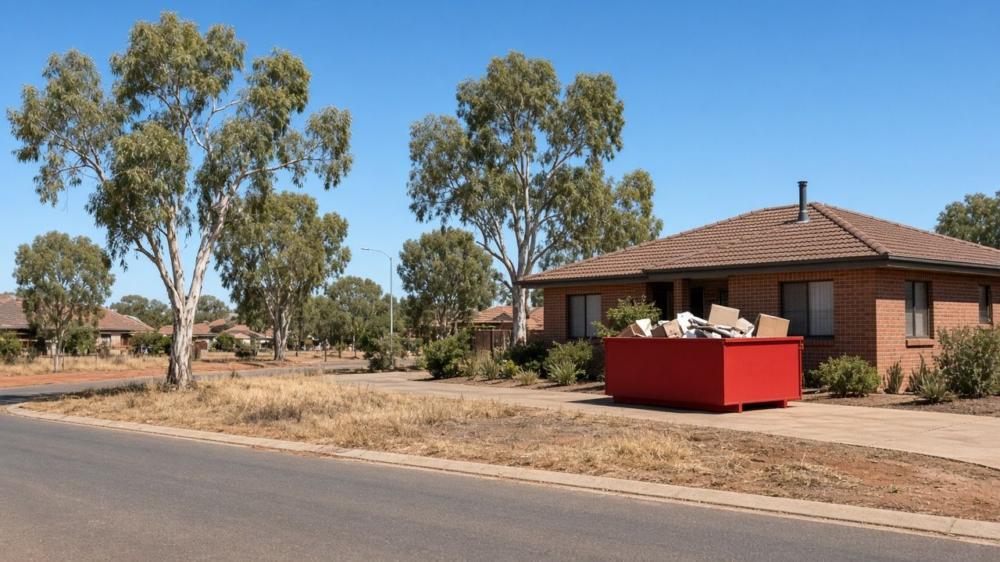
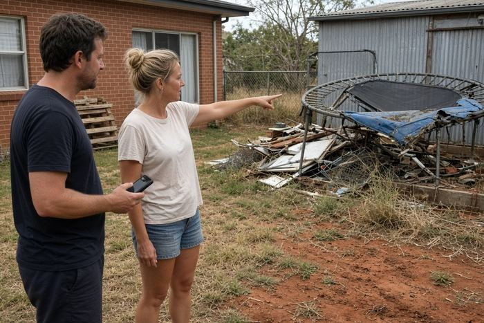
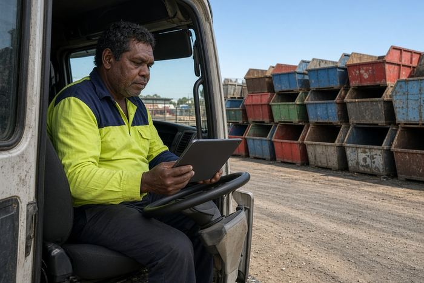
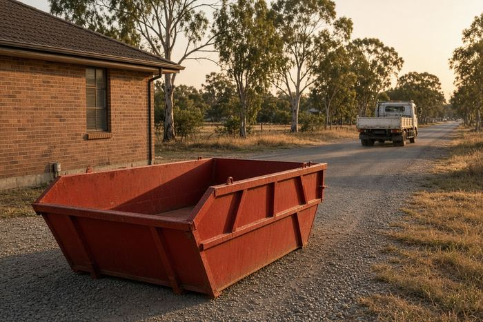
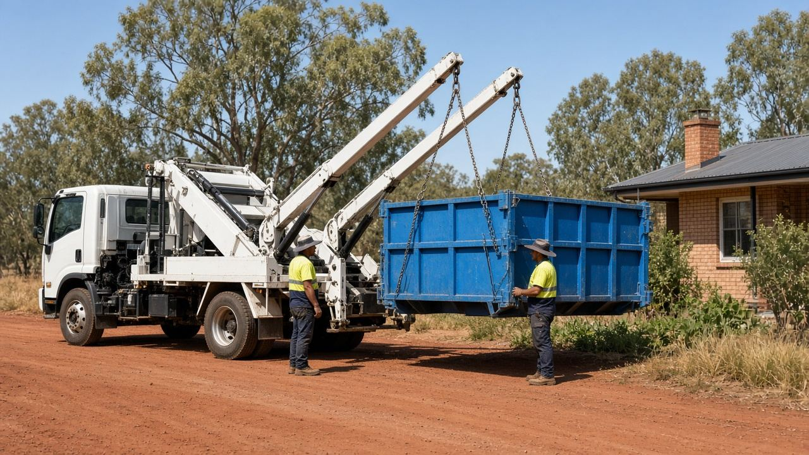
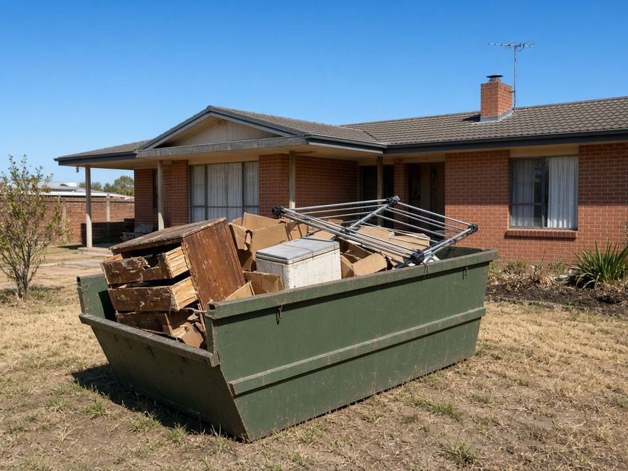
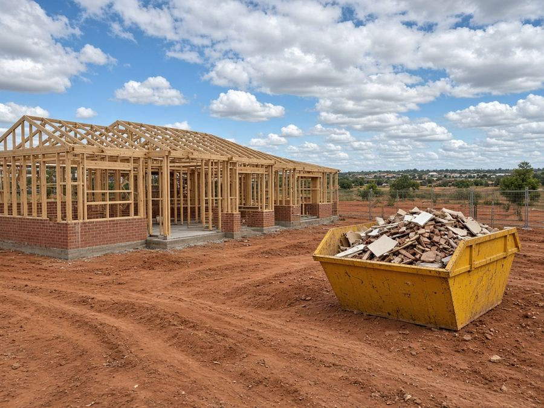
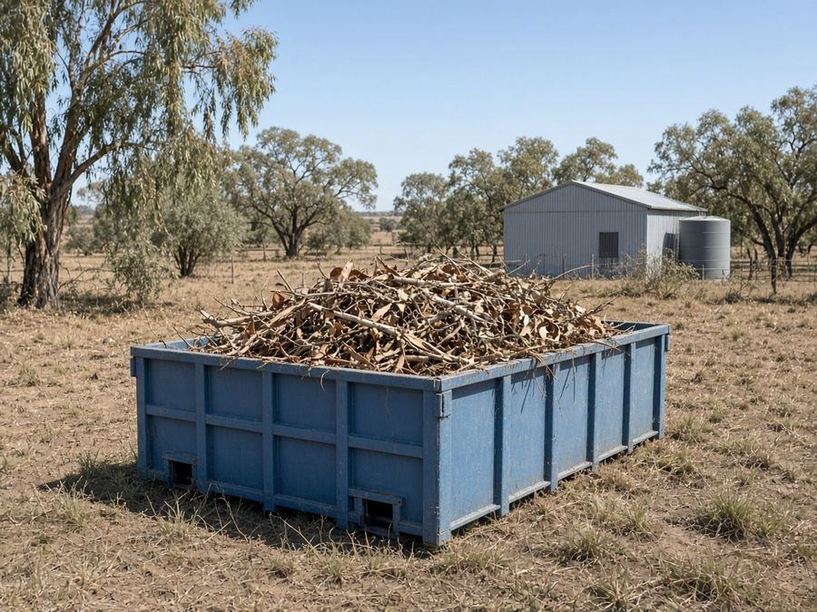
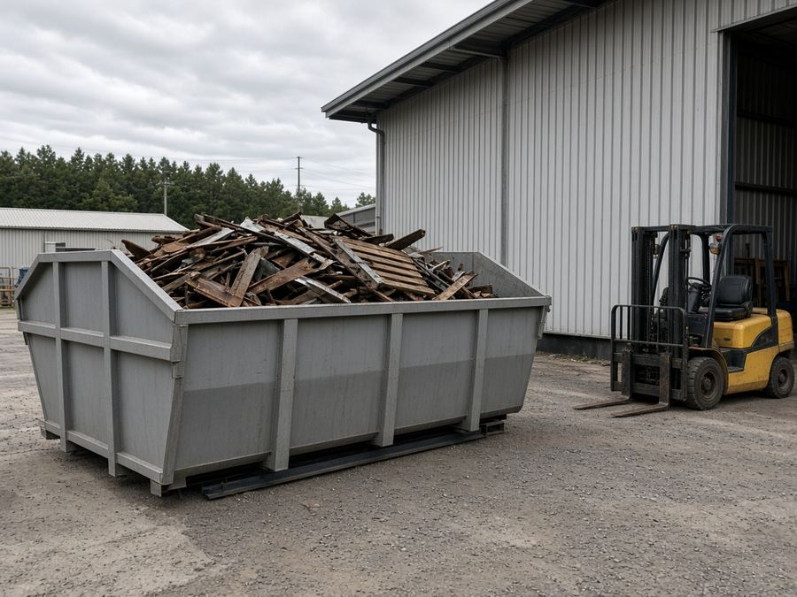
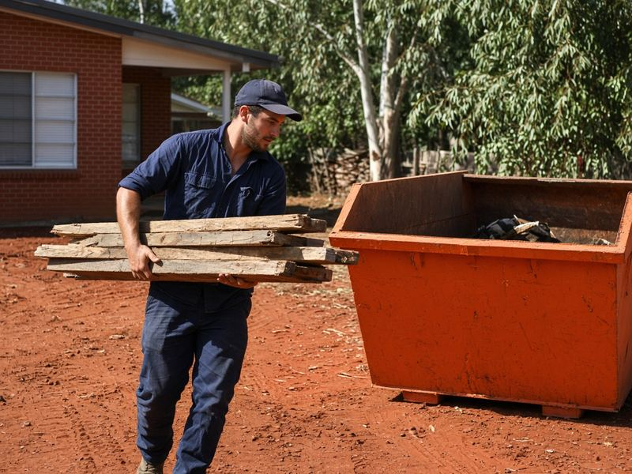

Skip Bins Dubbo: Free Skip Bin Hire Quotes in Dubbo and Wellington
Building in Keswick Estate, clearing out a rental in West Dubbo or cleaning up a farm shed out at Wongarbon? Tell us your suburb, skip size and waste type, and we'll pass it to one local skip bin operator for a free, no-obligation quote.
Updated 23 October 2026
Get a free skip bin quote in Dubbo
- Free quote for your exact job
- One local operator, not a call-centre auction
- Dubbo, Wellington, Geurie, Wongarbon and surrounds
- No obligation to book
How it works

1Tell us about the clean-up
Choose your suburb, skip size and waste type in the quote form and add your details.

2We pass it to one local operator
Your enquiry goes to one operator who services Dubbo or your part of the region, not to a list of companies.

3They confirm price and delivery
The operator rings you, confirms price and drop-off, and you only book if it suits.
Dubbo Skip Bins is a referral and quote service run by Raf Web Studio. We don't own trucks or bins and we don't take payments. The operator who quotes you supplies the skip and sets the price and hire terms.
Skip bin sizes for Dubbo jobs
Dubbo's new estates mean plenty of builders' waste, while older homes and farms produce bulky clean-outs. A 2–3 m³ skip handles a shed, 4–6 m³ a renovation, and 8–12 m³ a new build or a big property clean-up. Skips are measured in cubic metres (m³). Wheelie bin comparisons assume a standard 240-litre bin (0.24 m³). Trailer loads assume a 6×4 box trailer loaded level with its sides, roughly 1 m³. Shapes and dimensions vary between operators, so we don't list exact measurements.


Illustrations are approximate and not to an exact scale.
Mini skip
≈ 8 wheelie bins · ≈ 2 trailer loads
A shed or garage clean-out, or a small load of soil, rock or broken concrete.
Small skip
≈ 13 wheelie bins · ≈ 3 trailer loads
A backyard clean-up or a room or two of old furniture.
Bathroom or laundry reno
≈ 17 wheelie bins · ≈ 4 trailer loads
A bathroom or laundry renovation, or carpet and underlay from a rental.
Kitchen reno or big clean-up
≈ 25 wheelie bins · ≈ 6 trailer loads
A kitchen renovation, or clearing a rental between tenants.
House clear-out
≈ 33 wheelie bins · ≈ 8 trailer loads
Moving house or clearing a deceased estate.
Large renovation
≈ 38 wheelie bins · ≈ 9 trailer loads
Bigger renovations and extensions with mixed building waste.
Builders and big jobs
≈ 50 wheelie bins · ≈ 12 trailer loads
New builds in estates such as Keswick or Southlakes, or a large farm clean-up. Needs good access.
Some operators offer skip bags or larger hook-lift bins for commercial and farm jobs. Heavy waste (soil, rock, concrete) usually needs a smaller bin because of weight limits.
What can and can't go in a skip
Waste type matters as much as size. Loads are sorted and tipped at licensed facilities, mainly the Whylandra Waste and Recycling Centre west of town, and each type of waste costs a different amount to dispose of.
Usually accepted
- General household waste: furniture, toys, clothes, boxes, cupboard contents and general junk.
- Green waste: gum branches, prunings, lawn clippings and dry storm debris (often cheaper on its own, with no dirt or rubbish mixed in).
- Renovation waste: timber, plasterboard, old cabinets, carpet, tiles and fittings.
- Heavy or clean fill: soil, sand, concrete, bricks, rock and pavers (often needs its own bin and has a lower weight limit).
- Scrap metal: old roofing iron, fencing wire, steel posts, farm gates and machinery parts.
Not accepted, or extra charge
- Asbestos and fibro: never in a normal skip (see below).
- Tyres: usually banned or charged per tyre.
- Car and household batteries: a fire risk in a skip.
- Gas bottles and aerosols: can explode when compacted.
- Paint, oils, chemicals and liquids: including farm chemicals, pool chemicals, sump oil and paint.
- Mattresses: often accepted for an extra fee.
- Food waste, medical waste and e-waste: check first. Many operators won't take TVs, computers or fluorescent tubes.
A note on asbestos
Many older Dubbo and Wellington homes, sheds and farm buildings have fibro walls or asbestos-cement roofing. In NSW, removing more than 10 square metres of bonded (non-friable) asbestos needs a licensed removalist, and any friable asbestos needs a Class A licence. See SafeWork NSW's asbestos guidance. If you suspect asbestos, say so on the quote form. Never hide it in a general skip.
Dropping things off yourself
The Whylandra Waste and Recycling Centre is on Cooba Road, off the Narromine Road, about 15 km west of Dubbo. Dubbo Regional Council lists it as open weekdays 8am to 4:45pm and weekends 9am to 4:45pm, and it's cashless. Commercial and asbestos customers aren't admitted after 4:15pm. Check Dubbo Regional Council's website for fees and accepted items.
Skip bin prices in Dubbo
We looked for published skip bin prices from operators servicing Dubbo on 23 Oct 2026. Local operators we found don't publish price lists, and the national comparison figures we found were inconsistent, so we don't show them. Tell us about your job and a local operator will quote for it. Get a free quote.
Prices vary by size, waste type and job. The operator quotes for your exact bin size, waste type and address.
What changes the price
Size and weight
Larger bins cost more, though the cost per cubic metre usually drops. Heavy waste is limited by weight.
Waste type
Clean green waste and general rubbish usually cost less to tip than mixed building waste, soil or concrete.
Distance and hire length
Rural deliveries to Ballimore, Stuart Town or Eumungerie, extra hire days and difficult access can add to the price.
To keep costs down, sort heavy and green waste from general rubbish and book only the days you need.
Putting a skip on the street: Dubbo Regional Council rules
Last checked: 23 Oct 2026
On your own property
Your own driveway, yard or a firm patch of ground is the easiest place for a skip. Council's section 68 approval is for skips in a public place, so a bin wholly on your property generally doesn't need it. On rural blocks, make sure the truck has a firm, dry track in and out.
On the road, footpath or nature strip
Dubbo Regional Council requires an "Approval to Place a Skip Bin in a Public Place" under section 68 of the Local Government Act 1993, applied for through the NSW Planning Portal. Council considers the location, size and visibility of the bin. Its 2025–26 fees list an application fee of $185 and land rental of $1,029 per month for a skip in a public place.
Before you book a skip on the street, check with Dubbo Regional Council on 02 6801 4000 or council@dubbo.nsw.gov.au, or visit the council website. Fees change each financial year, so confirm the current amount. Mention it on the quote form too.
Wherever the skip goes, keep it clear of driveways, hydrants, bus stops and footpaths, and don't fill it above the rim.

Free skip bin quotes across the Dubbo region
Get a free quoteSkip bin guides for Dubbo
Plain-English guides to sizes, waste rules and Dubbo Regional Council permits, plus pages for nearby towns.
Local area guides
Areas we cover around Dubbo
We take quote requests from Dubbo, Wellington and nearby towns and rural areas. The operator confirms delivery to your address.
Dubbo
- Dubbo
- West Dubbo
- South Dubbo
- East Dubbo
- Delroy Park
- Keswick Estate
- Southlakes Estate
Villages and rural
- Brocklehurst
- Wongarbon
- Eumungerie
- Mogriguy
- Ballimore
- Rawsonville
- Toongi
Wellington and south-east
- Wellington
- Geurie
- Stuart Town
Not listed? Choose "Other" in the form and tell us your town.
Common skip bin jobs in Dubbo
The jobs we see most across the Dubbo region.

House and rental clean-outsMoving, decluttering or clearing a rental between tenants.
New builds and renosBuilders' waste from estates like Keswick and Southlakes, or a home renovation.
Yard and storm clean-upsFallen gum limbs, prunings and overgrown yards. Keep it green-only for a better rate.
Commercial and farm jobsWorkshops, sheds and farm clean-ups that need a bigger bin or hook-lift.Farm sheds and machinery
Old fencing, steel, timber and junk from properties around Ballimore, Toongi and Eumungerie. Scrap steel can often be separated.
Deceased estates
Clearing a family home gently and in one go. A larger skip and a flexible hire period help.
Skip bin FAQ for Dubbo
How much does a skip bin cost in Dubbo?
It depends on the size, waste type, hire period and distance. Local operators we checked don't publish set prices, so ask for a free quote for your job.
Do I need council approval for a skip on the street in Dubbo?
Yes, generally. Dubbo Regional Council requires a section 68 approval to place a skip bin in a public place. Its 2025–26 fees list a $185 application fee and $1,029 per month land rental. A skip wholly on your land generally doesn't need approval.
How do I apply for a skip permit in Dubbo?
Applications are lodged through the NSW Planning Portal. Call council on 02 6801 4000 to check what's needed.
What size skip do I need?
2–3 m³ for a shed, 4 m³ for a bathroom, 6 m³ for a kitchen or big clean-up, and 8–12 m³ for a house clear-out or new build.
Do you cover Wellington and Geurie?
Yes, we take requests from Wellington, Geurie, Stuart Town and the villages around Dubbo. The operator confirms delivery.
Can I put asbestos or fibro in a skip?
No. Asbestos can't go in a general skip. More than 10 m² of bonded asbestos must be removed by a licensed removalist in NSW.
Where is the Dubbo tip?
The Whylandra Waste and Recycling Centre is on Cooba Road, off the Narromine Road, about 15 km west of Dubbo. It's cashless.
What are the Whylandra opening hours?
Council lists weekdays 8am to 4:45pm and weekends 9am to 4:45pm. Commercial and asbestos customers aren't admitted after 4:15pm.
Can I put soil or rocks in a skip?
Usually, but heavy waste has weight limits and often needs its own bin. Choose "Soil, concrete or bricks" in the form.
Can I get a bigger bin for a farm clean-up?
Some operators have larger bins or hook-lift containers. Mention the job and access in the form.
What can't go in a skip?
Asbestos, tyres, batteries, gas bottles, chemicals, paint, oils and liquids. Mattresses and e-waste are often extra.
How long can I keep it?
Commonly a few days to a week, with extra days by arrangement.
Is Dubbo Skip Bins a skip hire company?
No. It's a free referral and quote service run by Raf Web Studio. One local operator quotes you and supplies the skip.

Ready to get rid of it?
Tell us your suburb, skip size and waste type and we'll pass it to one local Dubbo-region operator for a free quote.